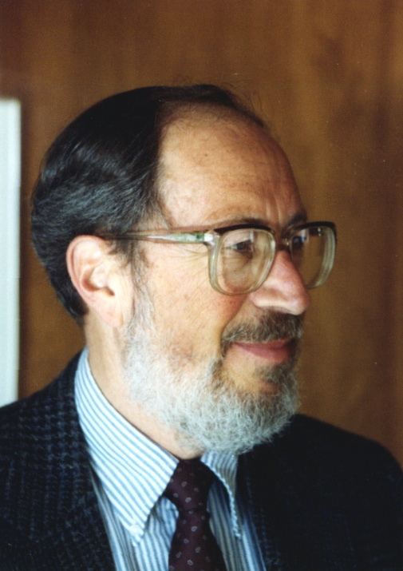

A Learning Mastery Project
|
 |
Find books written by Edgar Schein Read an interview with Ed discussing the consultant's role in organizations The Academic as Artist, an autobiographical sketch showing the influences on Ed Schein's philosophy, teaching, and consulting approaches. ASTD's Lifetime Achievement Award given to Ed Schein in May 2000 Spotlight interviews Ed Schein on corporate culture, mergers, and strategy |
Upcoming Presentations Keynote for Understanding and Leading Culture Change, Boston, MA, October 28-29, 2002
|